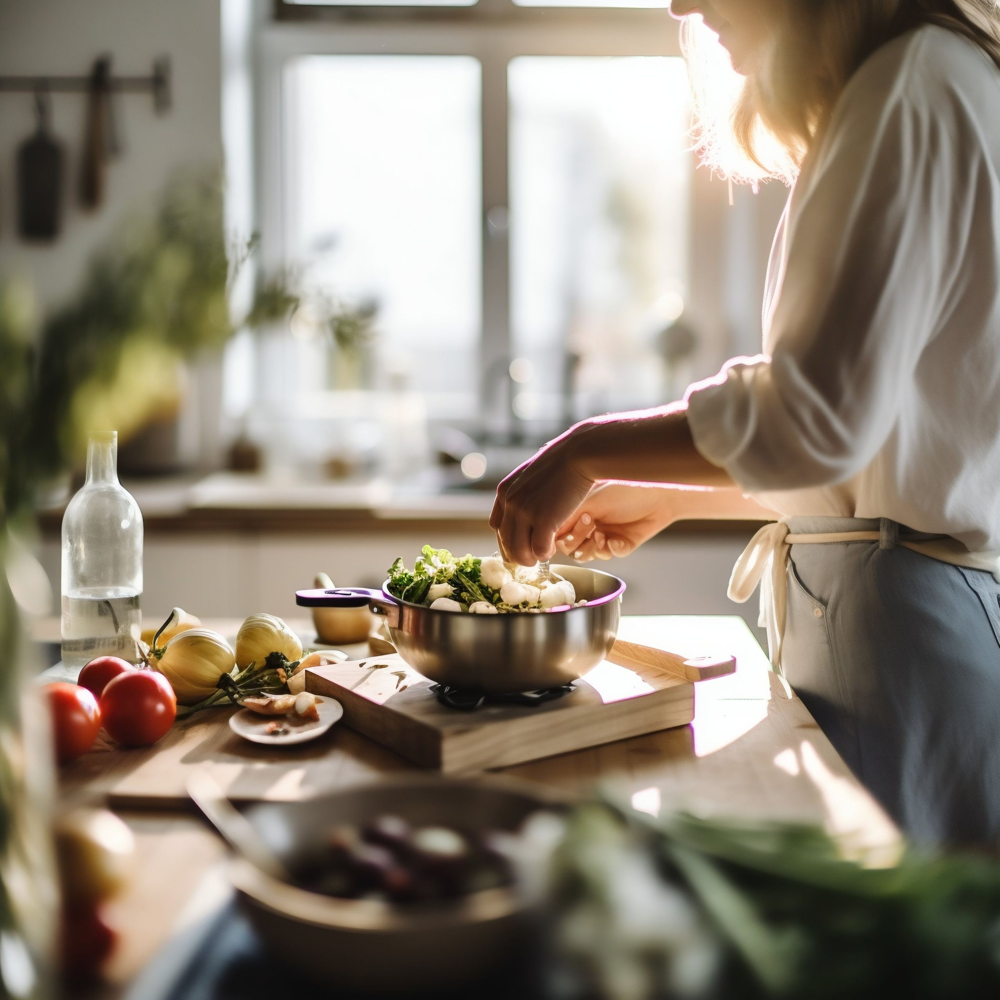
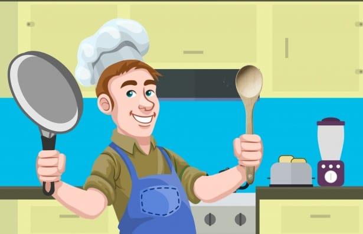

Почему дизайн сделан именно так
Не только «что показано», но и «зачем» — особенно там, где решение касается доверия и верификации, потому что именно это отличает продукт от обычной доставки еды.

Профиль повара строится как «личность», а не «точка продаж»
Покупатель платит незнакомому человеку за еду, приготовленную дома, без ресторанной проверки санстанции. Это принципиально другая транзакция доверия, чем заказ в сетевом ресторане — и дизайн должен явно это признавать, а не маскировать под привычный каталог.
- Первый крупный элемент на экране повара — фотография человека (не блюда), затем короткая личная история и специализация.
- Бейджи верификации сформулированы на человеческом языке («Личность проверена», «Кухня подтверждена фото») — не канцелярским («KYC passed»).
- Рейтинг разбит на 4 конкретных критерия (вкус, соответствие фото, упаковка, время) — общая «звёздочка» ничего не говорит о том, чему конкретно можно доверять.
На p2p-платформах барьер входа для покупателя — не цена, а тревога «а вдруг это разово и несерьёзно». Явные, но не бюрократичные сигналы доверия напрямую снижают этот барьер и повышают конверсию в первый заказ.
Фото от покупателей встроены прямо в карточку повара и блюда, рядом со студийными
Студийное фото блюда показывает «как задумано», фото покупателя показывает «как получилось на самом деле» — и именно второе снимает главный страх: «а придёт ли то, что на картинке».
- Горизонтальная лента UGC-фото размещена сразу после блока с рейтингом — не спрятана в отдельную вкладку «отзывы».
- В отзывах фото прикреплены прямо к тексту, а не отдельной галереей — сохраняется контекст «кто, что сказал, что показал».
На платформах хендмейд/маркетплейс-типа (Etsy, Авито) UGC исторически повышает конверсию сильнее, чем улучшение студийной съёмки — потому что закрывает вопрос достоверности, а не эстетики.

Радиус поиска — крупный элемент на главном экране, а не настройка в меню
Домашняя еда физически хуже переносит долгую транспортировку, чем ресторанная доставка на darkkitchen-логистике. Расстояние здесь — не «удобство», а фактор качества блюда, которое доедет тёплым или остывшим.
- Слайдер радиуса закреплён прямо под фильтрами ленты, всегда виден без дополнительных тапов.
- На карточке блюда расстояние стоит рядом с ценой — равноценный по важности параметр решения о покупке.
- В оформлении заказа — визуальная мини-карта «повар → вы» с честной оценкой времени в пути.
Гиперлокальность — это и ограничение продукта, и его сильная сторона: «еда от соседа за углом» звучит убедительнее и роднее, чем «еда от повара из другого конца города» — дизайн должен усиливать это, а не извиняться за радиус.

«Осталось 3 порции» и «Распродано» — не техническая деталь, а часть истории
У повара нет бесконечного склада — есть конкретное количество порций и конкретное время. Мы показываем это честно и превращаем в позитивный сигнал живости продукта, а не в фрустрацию.
- Бейдж доступности меняет цвет и текст по мере убывания порций (обычный → «горит» при ≤2 → «распродано»), давая честную прозрачность без искусственного давления таймером.
- Экран «распродано» сформулирован как хорошая новость («всё разобрали 🎉»), а не как ошибка, и сразу предлагает подписку на новую партию + похожие блюда рядом.
Состояние «раскуплено» на p2p-платформе — сигнал качества повара, а не сбой сервиса. Правильная подача превращает разочарование в доверие («значит, действительно вкусно») и удерживает покупателя через подписку вместо потери его внимания.

Терракот + шалфей + песочные нейтральные вместо холодного деливери-брендинга
Классический жёлто-чёрный/сине-белый язык доставки еды считывается как «конвейер». Мы выбрали палитру, которая ассоциируется с самой едой и домашней кухней — терракот томатов и специй, шалфейная зелень трав, медовые и песочные тона деревянного стола.
- Заголовки набраны шрифтом Fraunces — тёплой антиквой с характером, а не безликим корпоративным гротеском.
- Скругления — мягкие и крупные (16–28px), без острых корпоративных углов.
- Тени тёплые (коричневый оттенок вместо серого/чёрного) — усиливают ощущение уюта, а не техничности.
Визуальная дифференциация от Яндекс.Еды/Delivery Club/Uber Eats — это не только эстетика, а позиционирование: продукт явно сообщает «я не ещё один каталог ресторанов», снижая ложные ожидания и повышая осознанный выбор нового формата покупки.

Кабинет повара — «Сегодня», а не CRM-панель с метриками
Большинство поваров — не предприниматели. Форма добавления блюда — 3 крупных шага с подсказками человеческим языком; заказы — карточки с двумя крупными кнопками, без статусных диаграмм и терминологии SKU/конверсии.
- Расписание доступности задаётся переключателями «Сегодня / Завтра / Выбрать день», а не таблицей-календарём.
- Степпер порций — крупные круглые кнопки +/-, число видно издалека — удобно и для пользователей старшего возраста.
- Аналитика на главном экране — 3 цифры («заработано сегодня», «заказов», «рейтинг»), не дашборд с графиками.
Порог входа для стороны предложения (поваров) — главный риск p2p-маркетплейса. Каждый лишний шаг или непонятный термин в форме добавления блюда — это потенциальный отвалившийся повар, то есть потерянное предложение для всей платформы.

Контраст, крупный шрифт и тёмная тема — не «фича», а требование к аудитории
Аудитория поваров может включать людей старшего возраста, для которых стандартные мелкие шрифты и низкий контраст доставочных приложений создают реальный барьер использования — не эстетическое неудобство, а причина отказа от продукта.
- Базовый размер текста — 15px (не 12–13px, как часто в delivery UI), крупные тап-зоны от 44px.
- Тёмная тема реализована во всём UI-ките и прототипе через CSS-переменные — переключается мгновенно, без перезагрузки экрана.
- Переключатель «Крупный текст» в настройках профиля — явный, а не спрятанный в системных настройках телефона.
Доступность здесь напрямую расширяет предложение платформы: чем шире круг людей, которым физически удобно пользоваться приложением повара, тем больше потенциальных «соседских кухонь» на карте.
Чего мы сознательно не делали
- Не копировали визуальный язык Яндекс.Еды / Delivery Club / Uber Eats — палитра, типографика и тон текста подобраны так, чтобы продукт не путали с классической доставкой из ресторанов.
- Не перегружали интерфейс повара бизнес-метриками в стиле CRM — только 3 ключевые цифры и понятные действия.
- Не строили ленту как безликий каталог позиций — каждая карточка обязательно показывает повара как человека, а не только товар.